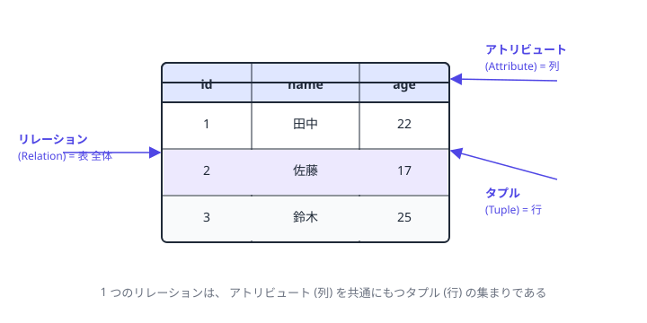
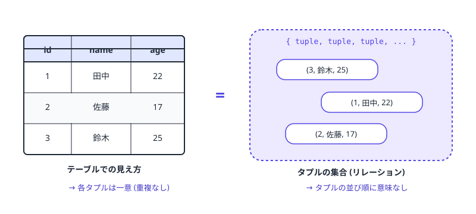

第 2 章 — データベースの基礎
Ch.1 で HTTP サーバが動くようになったので、 次はデータを置く場所を作ります。 この章では users テーブル 1 つだけ をサクッと立てて、 テーブル設計の基本 と SQL の最小語彙 を身につけるのがゴール。 ガチャ用の他のテーブル (キャラ、 ガチャ筐体など) は、 必要になった章でその場で増やしていきます。
本章は %%sql セルマジックを使います。 1 セルに 1 つの SQL 文だけ書く形。 SQL のシンタックスハイライトが効き、 エラーも分かりやすくなります。
裏で動かすのは SQLite (ファイル gacha.db)。
Python 標準ライブラリだけで動き、 ファイルベースなのでセル間でデータが残ります。
本番想定の PostgreSQL とは 方言の差 がいくつかありますが、 本章で扱う範囲はほぼ共通です。
2.1 リレーション / テーブル — 厳密にいうと
よく「テーブルは 2 次元の表」 と教わりますが、 リレーショナルモデルの定義は少し違います。


リレーション (relation) は、 ある属性の集合に対する タプルの集合 (set)です。 集合なので:
- 行に重複は無い (同じタプルは 1 個まで)
- 行に順序は無い (上から読んでも下から読んでも意味は同じ)
- 列にも順序は無い (列名でアクセスする)
SQL の世界の テーブル (table) はこのリレーションを実装した「近い親戚」 で、 厳密には少し違います:
- 主キーが無いと行の重複が起き得る (例:
SELECT 'x' UNION ALL SELECT 'x') - 列に物理的な並び順がある (が、 アプリ側で頼ってはいけない)
本教材では「テーブル = リレーションの実用形」 として扱います。 実装上は 2 次元の表として描けるが、 概念は集合と覚えておけば十分です。
この章でこれから作る users テーブルは、 中身の概念図で言うとこういうものです:
| id | name | display_name | created_at |
|---|---|---|---|
| 1 | alice | アリス | 2026-04-27 ... |
| 2 | bob | ボブ | 2026-04-27 ... |
4 つの属性 (id, name, display_name, created_at) と、 ユーザー全員ぶんのタプル (= 行)。 ガチャシステムの全データは、 最終的にこういうリレーションが 5〜6 個集まったものになります。
2.2 主キー (Primary Key, PK) を腹に落とす
リレーションの中で「その行を世界で 1 つだけ特定する列 (もしくは列の組み合わせ)」 を主キーと呼びます。 ユーザーで言えば「id = 1 ならアリス、 id = 2 ならボブ、 同じ id を持つ別人はいない」 のような。
主キーの 3 つの不変条件
- 一意性: 同じ値の行が 2 つあってはならない
- 非 NULL: 「未定」 を許さない (= 値がなければそもそも識別できない)
- 不変性 (運用上): 一度決めた値は変えない (他のテーブルから参照されているため)
自然キー vs 代替キー
自然キー = 業務上の意味を持つキー (例: マイナンバー、 メールアドレス)。
代替キー (surrogate key) = システムが採番した意味を持たない番号 (例: id)。
実務では 代替キー (id) を主キーにして、 自然キーは UNIQUE 制約で別途守るのが定番。
理由: 自然キーは業務都合で変わったり、 NULL になったり、 形式が変わったりするから。
この教材も全テーブルで id を主キーにします。
複合キー
2 列以上を組み合わせて主キーにすることもできます。 例: 「あるユーザーがあるキャラを持っているか」
の中間テーブルでは (user_id, character_id) の組で主キーにできる。
第 8 章で出てきます。
2.3 ipython-sql + SQLite を Colab に入れる
!pip install ipython-sql --quiet
%load_ext sql
%sql sqlite:///gacha.db
print("sqlite:///gacha.db に接続しました (ファイルが無ければ自動作成)")sqlite:///gacha.db に接続しました (ファイルが無ければ自動作成)
%load_ext sql で SQL マジックを有効化、 %sql sqlite:///gacha.db
で SQLite のファイル gacha.db に接続。 これ以降のセル冒頭で %%sql
と書けば、 そのセルの中身が SQL として実行されます。 シンタックスハイライト付き。
2.4 CREATE TABLE — users テーブルを作る
%%sql
DROP TABLE IF EXISTS users;
CREATE TABLE users (
id INTEGER PRIMARY KEY AUTOINCREMENT,
name TEXT NOT NULL UNIQUE,
display_name TEXT NOT NULL,
created_at TEXT NOT NULL DEFAULT (datetime('now'))
);* sqlite:///gacha.db
Done.
Done.💡 解説
INTEGER PRIMARY KEY AUTOINCREMENT= 自動採番の主キー。 INSERT でidを指定しなければ 1, 2, 3 ... と入っていくNOT NULL= この列に NULL を入れさせないUNIQUE= この列に同じ値を 2 行入れさせない (主キーじゃないけど一意にしたい列に使う)DEFAULT (datetime('now'))= 値を指定しなければ現在時刻 (UTC) を入れるDROP TABLE IF EXISTS= もう一度このセルを実行できるように、 既存のテーブルがあれば消す (本番では絶対に使わないので注意)
PostgreSQL の場合は INTEGER PRIMARY KEY AUTOINCREMENT が BIGSERIAL PRIMARY KEY
になり、 created_at の型は TIMESTAMPTZ になりますが、 思想はまったく同じ。
2.5 INSERT — 3 件のユーザーを追加
%%sql
INSERT INTO users (name, display_name) VALUES ('alice', 'アリス');
INSERT INTO users (name, display_name) VALUES ('bob', 'ボブ');
INSERT INTO users (name, display_name) VALUES ('carol', 'キャロル');1 rows affected.
1 rows affected.
1 rows affected.
id と created_at は省略しています (前者は AUTOINCREMENT、 後者は DEFAULT)。
確認のため SELECT:
%%sql
SELECT * FROM users ORDER BY id;id name display_name created_at
-- ----- ------------ -------------------
1 alice アリス 2026-04-27 06:30:00
2 bob ボブ 2026-04-27 06:30:00
3 carol キャロル 2026-04-27 06:30:002.6 UPDATE / DELETE
%%sql
UPDATE users SET display_name = 'アリス・スミス' WHERE name = 'alice';
SELECT id, name, display_name FROM users WHERE name = 'alice';id name display_name
-- ----- ----------------
1 alice アリス・スミス%%sql
DELETE FROM users WHERE name = 'carol';
SELECT * FROM users ORDER BY id;id name display_name created_at
-- ----- -------------- -------------------
1 alice アリス・スミス 2026-04-27 06:30:00
2 bob ボブ 2026-04-27 06:30:00UPDATE users SET display_name = 'X' のように WHERE を忘れると
全行が更新される。 DELETE FROM users も同様で全行消える。
本番で初心者がやらかす一番有名なバグ。
2.7 制約に「わざと」 殴られる
DB の良さは「不正なデータが入りそうになったら自分から教えてくれる」 こと。 わざと違反させて、 各制約のメッセージを目で見ておきます。
%%sql
INSERT INTO users (name, display_name) VALUES ('alice', '別人だよ');(sqlite3.IntegrityError) UNIQUE constraint failed: users.name
[SQL: INSERT INTO users (name, display_name) VALUES ('alice', '別人だよ');]
この UNIQUE constraint failed こそが、 第 5 章で POST /api/register
の重複チェックを アプリ側で書かなくていい理由 です (= DB が代わりに守ってくれる)。
%%sql
INSERT INTO users (name) VALUES ('mallory'); -- display_name を欠落させる(sqlite3.IntegrityError) NOT NULL constraint failed: users.display_name%%sql
INSERT INTO users (id, name, display_name) VALUES (1, 'mallory', 'マロリー');(sqlite3.IntegrityError) UNIQUE constraint failed: users.id
主キーは UNIQUE + NOT NULL の合わせ技 (内部的に UNIQUE 制約として実装される)。
手で id を指定しても、 既に存在する値なら弾かれる。
📝 自分でちょっと試す
- セル 2-G を 2 度実行 → 何が違う?
UPDATE users SET name = 'bob' WHERE name = 'alice'→ どうなる? なぜ?DELETE FROM users(WHERE 無し) → 何が消える? その後 INSERT すると id はどこから始まる?
2.8 仕上げ — Ch.3 への橋渡し
これで gacha.db ファイルに users テーブルができました。
ファイルベースなので、 Colab のランタイムを切らなければ次のセル・次の章でも同じテーブルが見えます。
第 3 章では、 Ch.1 で建てた HTTP サーバから このテーブルに INSERT / SELECT する コードを書きます。 そこで初めて「サーバ + DB」 が 1 つの動くシステムになります。
本教材ではリレーショナルモデルの「原理原則」 に立ち入りすぎないよう、 必要最小限を扱っています。 SQL は構文を覚えるものではなく 集合操作の言語として 体系的に理解したい人は、 以下が定番です:
- C.J. Date『データベース実践講義 — エンジニアのためのリレーショナル理論』 (オライリー) — リレーショナルモデルの理論をエンジニア向けに丁寧に解説
- 増永良文『リレーショナルデータベース入門』 — 国内の定番教科書
- 正規化 / 関数従属性 / 第 3 正規形などの設計論はこのレベルで扱われます
図は私の知り合いが書いた研修資料 (新卒向け SQL/データエンジニアリング、 BigQuery 文脈) からの 借用です。 集合論的な語彙でリレーショナルモデルを掘り下げたい人にはちょうど良いはず。
本教材では JOIN / GROUP BY / ウィンドウ関数 / トランザクション は、 必要になる第 7 / 8 章でその場で扱います。 「先取り学習」 にはせず、 必要が見えたときに最大の効率で吸収する方針です。
本章のまとめ
- リレーションは集合、 テーブルはその実用形。 「同じ事実を 1 箇所だけに」
- 主キーは「行を世界で一意に特定」 する列。 自動採番 (id) を使うのが定番
NOT NULL / UNIQUE等の制約は DB が自動で守ってくれる (= アプリで書く必要が無い)- SQL は
CREATE / INSERT / SELECT / UPDATE / DELETEで大半が書ける。 残り (JOIN、 GROUP BY、 トランザクション) は必要なときに学ぶ